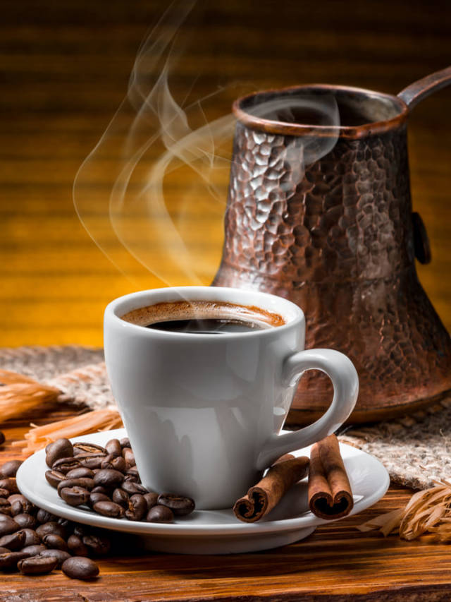
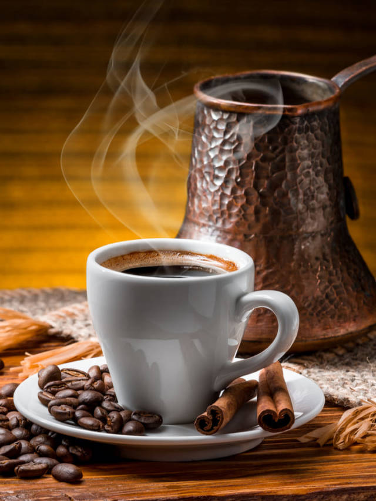
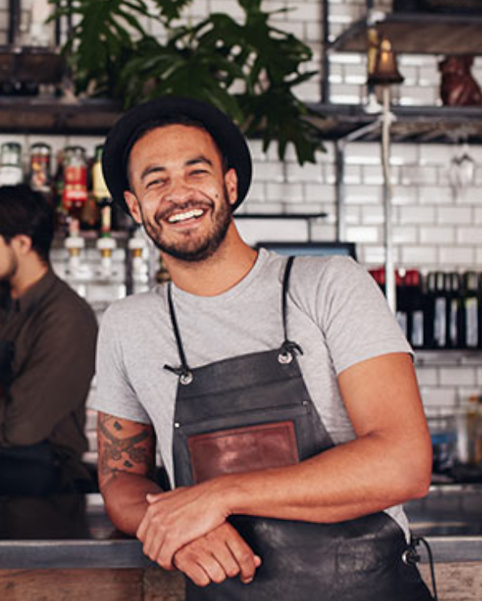
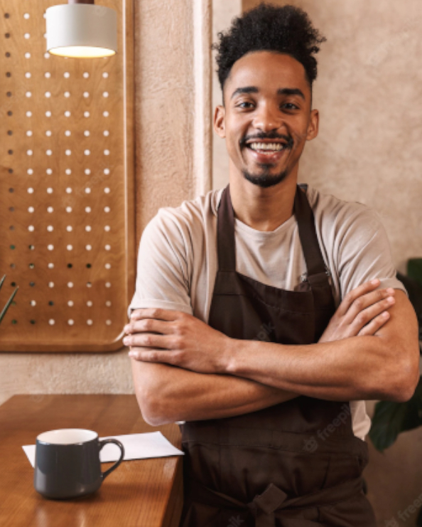

Nós Temos
- Internet Gratis no local
- Ambiente Climatizado
- Espaço de interação para pets
- Ambiente infantil
Missao
Nossa missão no café margoso não é somente com o café de excelência, queremos mudar a experiência de tomar um café. Nossas Instalações são personalizadas para trazer o máximo de comodidade ao nosso consumidor, nosso produto se entende além da xícara, mesmo os nossos grãos são de maior qualidade, escolhidos a dedo para fazer o mais amargo e saboroso dos cafés
Fundada em 1985 nossa rede de cafeterias vem crescendo ao longo dos anos e expandindo seu número de franquias. Como uma amante de cafe nossa fundadora sempre gostou dos mais amargos do cafe, e sempre admirou sua capacidade de acordar as pessoas, por isso ela criou o Café Margoso para que as pessoas estejam prontas e acordadas ao longo do seu dia.
 

-

Os nossos Grãos são especialmente Coletados para terem o melhor resultado na produção do café.
-
Parte dos nossos lucros são doados para instituições de caridade a fim de ajudar os necessitados
-

Mesmo os nossos cafés expressos são feitos com a melhor tecnologia e preparo
-

Feito por amantes de café, para amantes de café sabemos oque você procura no seu amigo amargo
Staff
-
Érica Ramos
C.E.O
-
Roberto Dias
Gerente
 -
Sara Alves
Barista

-
Manoel Takeda
Atendente
